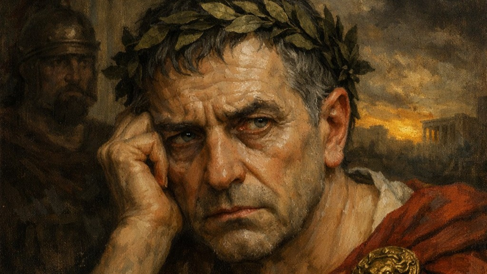

Синопсис
В центре произведения — встреча мира повседневной советской Москвы с мистической силой, воплощённой в образе Воланда и его свиты. Параллельно разворачиваются история любви Мастера и Маргариты и философская линия Понтия Пилата и Иешуа.
Роман М. А. Булгакова, соединяющий сатиру, мистику, философскую притчу и любовную линию, выступает оптимальной основой для проектирования многослойного цифрового сопровождения спектакля.
«Мастер и Маргарита» обладает высокой узнаваемостью, сложной символической системой, яркой галереей персонажей и выраженным визуальным потенциалом.
В структуре AR-гида для этой постановки реализованы разные форматы: краткий синопсис, блок персонажей, мультимедиа, backstage, тематические AR-точки и постспектакльный раздел.
В центре произведения — встреча мира повседневной советской Москвы с мистической силой, воплощённой в образе Воланда и его свиты. Параллельно разворачиваются история любви Мастера и Маргариты и философская линия Понтия Пилата и Иешуа.
В рамках AR-гида зрителю доступны несколько уровней контента: базовая информация, интерпретация символов, мультимедиа и визуальные AR-сцены, запускаемые в театральном пространстве.
Карточки персонажей помогают зрителю сориентироваться в структуре образов и сюжетных линий.
Образ связан с темами творчества, уязвимости и внутренней свободы.
Воплощает силу чувства, жертвенность и волю к преодолению границ.
Объединяет мотивы иронии, возмездия, театральности и метафизического порядка.
Особенно подходит для AR-визуализации за счёт узнаваемости и пластики.

Тема власти, вины, выбора и внутреннего конфликта.
Придаёт спектаклю философскую глубину через исторический и символический комментарий.
Атмосферная композиция, связанная с визуальным стилем и настроением постановки.
Объяснение мотивов, символов и сценических решений для зрителя после посещения театра.
Здесь может размещаться тизер, интервью режиссёра или видеодневник репетиций.
Анимированная визуальная сцена с образом Воланда или полётом Маргариты.
Карточки героев дополняются визуальными эффектами и цитатами.
Короткие webAR-сцены и элементы интерактивной навигации на стендах.
Разбор символики, рекомендации по другим постановкам репертуара.